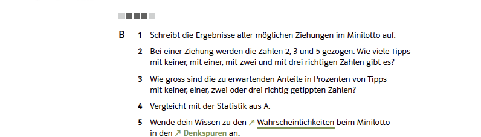
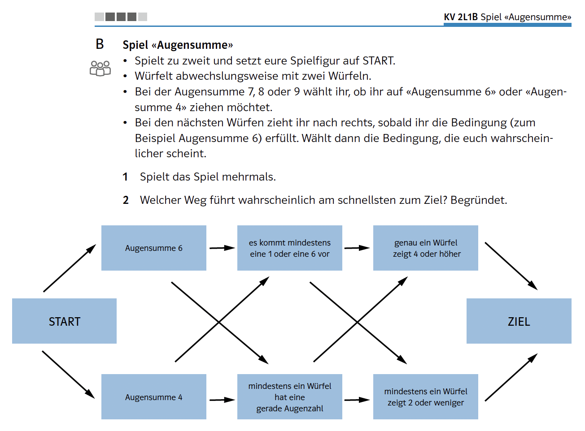
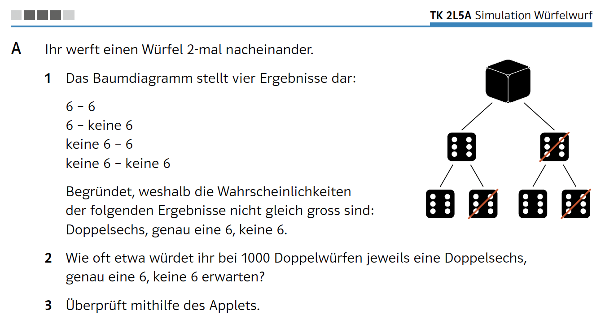
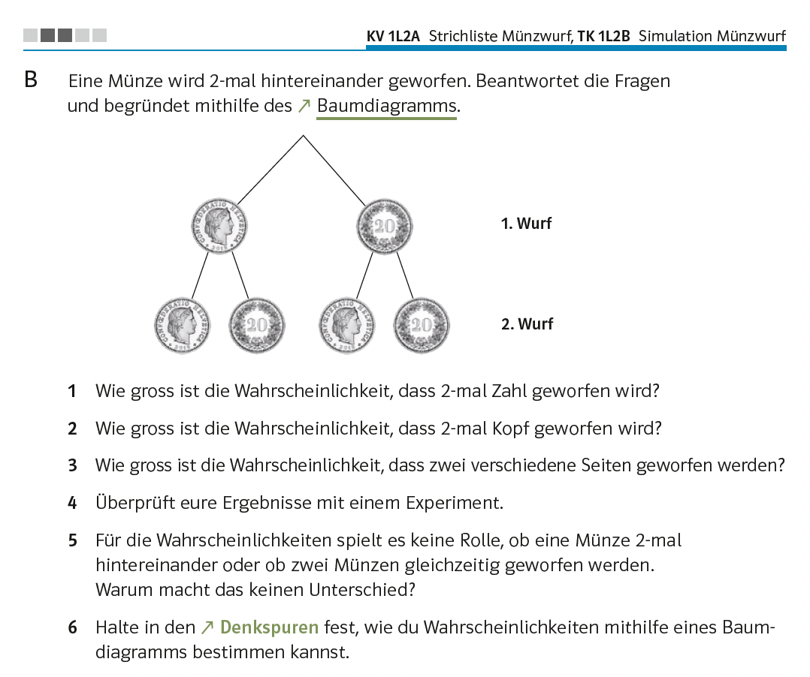

Bezug zur SchulpraxisDie Sache ohne den Begriff
Von den Begriffen dieses Kapitels findet sich in den Lehrmitteln der Sekundarstufe I nur einer wieder: Ergebnis. Das Wort Ergebnismenge kommt in keiner Ausgabe vor, Ereignis in der neueren nicht mehr – die frühere verwendete es noch als Etikett vor einem Alltagssatz, etwa «Ereignis 2: Es wird genau einmal eine 6 gewürfelt». Eine Mengenschreibweise gibt es nirgends, Venn-Diagramme ebenso wenig.

Quelle: Mathbuch 2 (überarbeitete Ausgabe), Aufgabe 2L2 B, S. 67

Quelle: Mathbuch 2 (überarbeitete Ausgabe), Aufgabe 2L1 B, S. 66
Wo die Sache trotzdem steckt
Das einzige Wort, das bleibt, wird nirgends definiert. Es steht mal für das, was bei einem Versuch herauskommt – «vergleicht eure Ergebnisse»\ –, mal im fachlichen Sinn, etwa für die sechs Wurfpositionen eines Körpers.
Die Ergebnismenge wird nicht angegeben, sondern hergestellt:
Halten Sie hier kurz inne. Wie viele Zeilen entstehen, wenn Sie diesen Auftrag ausführen?
Antwort anzeigen
Gemeint sind die zehn ungeordneten Ziehungen – das ergibt sich aus dem Spiel, und die Folgeaufgaben rechnen damit. Trotzdem muss diese Überlegung angestellt werden, bevor die erste Zeile geschrieben ist: Wer $\{2,3,5\}$ und $\{3,2,5\}$ getrennt notiert, kommt auf sechzig. Solche Aufträge sind kein Einzelfall – beim Glücksspiel mit den Buchstabenkugeln sollen alle möglichen Wörter notiert werden, beim Domino alle Steine gefunden und ihre Anzahl begründet.
Ereignisse schliesslich stehen als Bedingungen im Aufgabentext: «zwei verschiedene Seiten», «genau eine 6», «1-mal Kopf und 3-mal Zahl». Auch Verknüpfungen sind dabei, und zwar in dichter Folge:
«Mindestens eine 1 oder eine 6»\ ist eine Vereinigung und umfasst $20$ der $36$ Ergebnisse «mindestens ein Würfel hat eine gerade Augenzahl»\ liesse sich am bequemsten über das Gegenereignis abzählen und umfasst $27$ «genau ein Würfel zeigt 4 oder höher»\ ist keines von beidem und umfasst $18$. Gefragt ist, welcher Weg am schnellsten zum Ziel führt – also ein Vergleich von Ereignissen.
Was die Lernenden dabei leisten, ist genau die Übersetzung, die unser Kapitel mit der Mengenschreibweise vollzieht: von einem Satz zu den Ausgängen, die ihn erfüllen. Nur bleibt das Ergebnis dieser Übersetzung unsichtbar, weil es nirgends hingeschrieben wird.

Quelle: Mathbuch 2 (überarbeitete Ausgabe), Aufgabe 2L5 A, S. 70
Warum der Verzicht sinnvoll ist – und was er kostet
Wozu dient die Unterscheidung überhaupt? Ein Ergebnis ist ein Element der Ergebnismenge, ein Ereignis eine Teilmenge davon. Und die Wahrscheinlichkeit ist eine Funktion, die Teilmengen eine Zahl zuordnet, nicht Elementen – auch dann, wenn die Teilmenge nur ein Element enthält.
Man könnte einwenden, dass sich das umgehen liesse: Wer auf Ereignisse verzichtet, ordnet die Zahlen eben gleich den einzelnen Ergebnissen zu. Das ist möglich – reicht aber nicht weit. Denn die Fragen, die man tatsächlich stellt, betreffen fast nie ein einzelnes Ergebnis: «mindestens eine 6», «zwei verschiedene Seiten», «höchstens zwei Treffer». Um die zugehörigen Zahlen zu addieren, braucht man einen Begriff für das, was da addiert wird – und genau der ist das Ereignis.
Für den Unterricht der Sekundarstufe I bringt diese Trennung wenig. Man bräuchte mit ihr zugleich Ergebnismenge, Teilmenge und eine Schreibweise – und all das, um Sätze zu ersetzen, die auch so verstanden werden. Wer fragt, wie wahrscheinlich zwei verschiedene Münzseiten sind, hat ein Ereignis benannt, ohne das Wort zu brauchen. Für Bedingungen vergleichen und günstige Fälle zählen reicht die Alltagssprache.
Wie subtil die Unterscheidung ist, zeigt allerdings eine Aufgabe:
Halten Sie kurz inne und lesen Sie die Teilaufgabe genau. An welcher Stelle wird die Sprache ungenau – und wo nicht?
Antwort anzeigen
Der erste Satz ist einwandfrei. Wird jeder Wurf nur danach unterschieden, ob eine Sechs fällt, so hat der Doppelwurf genau vier Ausgänge, und diese vier heissen zu Recht Ergebnisse. Bis hierhin werden bloss die Möglichkeiten aufgezählt.
Ungenau wird es erst im zweiten Satz, und zwar genau dort, wo von Wahrscheinlichkeiten die Rede ist. Denn nun sind drei Fälle genannt, von denen einer – «genau eine 6»\ – zwei der vier Ausgänge zusammenfasst. Er ist damit ein Ereignis, und Wahrscheinlichkeiten hat man ohnehin nur von Ereignissen.
Von der Sprache abgesehen verlangt die Aufgabe einiges – und zwar mehr, als das Zählen von Pfaden hergibt.
Wer bis hierhin mit Baumdiagrammen gearbeitet hat, kennt sie aus dem Münzwurf: Dort tragen alle Pfade dasselbe Gewicht, und man bestimmt eine Wahrscheinlichkeit, indem man die günstigen Pfade zählt. Genau diese Erfahrung führt hier in die Irre. «Genau eine 6»\ besteht aus zwei Pfaden und müsste demnach am wahrscheinlichsten sein.
Das Gegenteil ist der Fall. Hinter den vier Ausgängen stehen $1$, $5$, $5$ und $25$ der $36$ Würfelpaare – also ist «keine 6»\ mit einem einzigen Pfad mehr als doppelt so wahrscheinlich wie «genau eine 6»\ mit zweien.
Zwei Dinge fallen hier also zusammen: dass ein Ausgang für mehrere Ergebnisse stehen kann, und dass die Ausgänge selbst verschieden schwer wiegen. Die Aufgabe verlangt beides gleichzeitig, und der Aufgabentext weist auf keines von beidem hin.

Quelle: Mathbuch 1 (überarbeitete Ausgabe), Aufgabe L2 B, S. 67
Was an die Stelle der Schreibweise tritt
Bleibt die Frage, wie man ohne Mengenschreibweise festhält, worüber man spricht. Die Antwort ist eine Darstellung:
Das Baumdiagramm leistet gleich dreierlei. Es legt fest, was als Ausgang zählt, und erzeugt damit die Ergebnismenge. Es zeigt, welche Pfade zu einer Bedingung gehören, und macht damit ein Ereignis sichtbar. Und es liefert über die Äste die Rechnung gleich mit.
Damit übernimmt eine ikonische Darstellung die Arbeit, die in einem mengentheoretischen Zugang die Schreibweise leisten würde. Und sie tut es weitgehend allein: Tabellen dienen in diesen Kapiteln der Erfassung von Daten, nicht der Modellierung, und Venn-Diagramme kommen nicht vor. An einer einzigen Stelle werden drei Darstellungen zur Wahl gestellt – Baumdiagramm, Tabelle oder Punkte und Pfeile.
Fazit
Es folgt daraus zweierlei. Erstens: Sie brauchen die Begriffe dieses Kapitels nicht, um sie zu unterrichten. Zweitens: Sie brauchen sie trotzdem – weil Sie sonst nicht sehen, wenn eine Aufgabe die Ebene wechselt, und weil Sie einer Klasse, die an einer solchen Stelle ins Stocken gerät, nicht sagen könnten, woran es liegt.